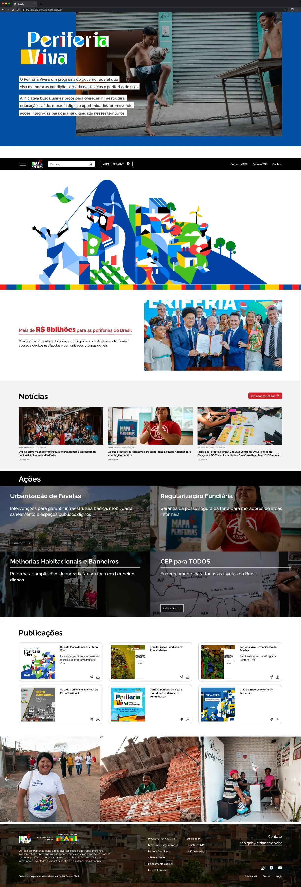

Voltar para projetos
Mapa das Periferias
A porta de entrada de um portal que reúne investimentos federais, ações da Secretaria e iniciativas das próprias periferias brasileiras.

Contexto
O Mapa das Periferias reúne dados sobre as áreas periféricas do país: investimentos e obras do Governo Federal, ações feitas pelos próprios territórios, iniciativas reconhecidas pelo Prêmio Periferia Viva e informações coletadas pelo Mapeamento Popular. O portal soma mais de 3 mil iniciativas periféricas cadastradas.
Com tanto conteúdo, a homepage precisava ajudar cada pessoa a achar o seu caminho sem se perder.
Decisões
- Estrutura modular: blocos independentes para programas, notícias, ações e publicações, cada um com uma função clara.
- Contraste e hierarquia: fundo preto no topo e no bloco de ações, tipografia forte nos títulos e uma faixa de cores da identidade do programa como separador.
- Navegação direta: a busca e o mapa interativo ficam fixos no topo, sempre à mão.
- Dados em linguagem simples: números como os mais de R$ 8 bilhões investidos aparecem com uma frase que explica o que significam.
